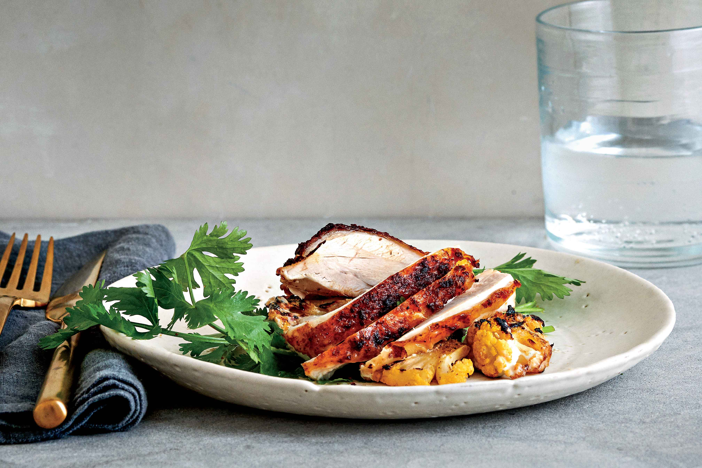
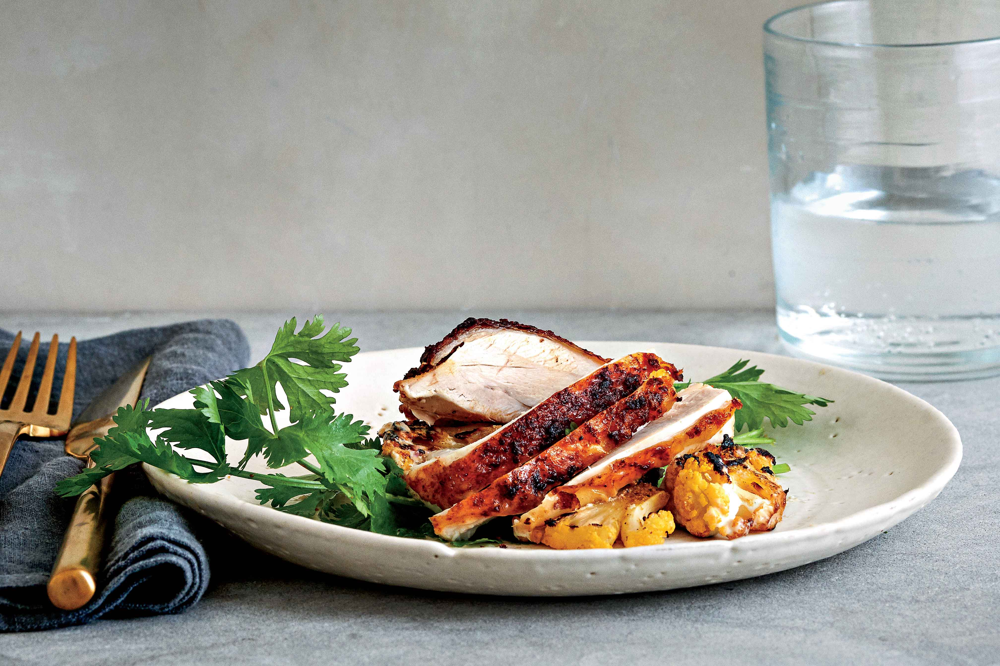

Preheat the oven to 180ºC/350ºF/gas 4. Wash the potatoes and chop into 3cm chunks. Trim the cauli stalk, remove any tough outer leaves, then chop the cauli and nice leaves the same size as the spuds. Finely slice the coriander stalks (reserving the leaves in a bowl of cold water). In a 30cm x 40cm roasting tray, toss the veg and coriander stalks with a pinch of sea salt and black pepper, and 1 tablespoon each of olive oil and red wine vinegar.
Sit the chicken in the tray and rub all over with the tikka paste, getting into all the nooks and crannies. Place the chicken directly on the bars of the oven, scrunch everything in the tray and place exactly underneath the chicken to catch the tasty juices. Roast for 1 hour, or until everything is golden and cooked through, turning the veg halfway. Sit the chicken on top of the veg to rest for 5 minutes, then sprinkle over the drained coriander leaves and serve, tossing the veg in all the tasty juices before dishing up.

 

Tasty tikka chicken,made to a perfectly temperature,and spiced for a perfect taste.Enjoyable for the whole family and makes you want to come back for more.